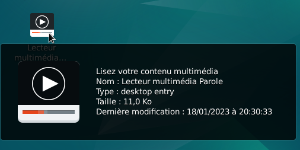
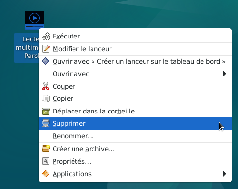
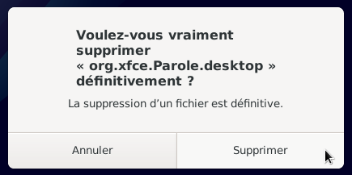

Retour
Suppression de raccourcis sur le bureau : Le site Xfce.
Exemple, supprimer l'icône (raccourci) de l'application « Parole » du bureau Xfce.



Nota : Pour créer un raccourci, se rendre au chapitre : Ajout de raccourcis d'une application sur le bureau.
Informations sur le logiciel libre et Merci.
Marques déposées :
Ce site ne fait pas partie de Debian, n'est pas produit par le projet
Debian, ni approuvé par le projet Debian.
Ce site n'est pas affilié à Debian. Debian est une marque déposée appartenant
à Software in the Public Interest, Inc.
Contribuer :
Ce site ne fait pas partie de XFCE, n'est pas produit par le projet
XFCE, ni approuvé par le projet XFCE.
Ce site n'est pas affilié à XFCE.
Ce site est juste réalisé par un passionné.